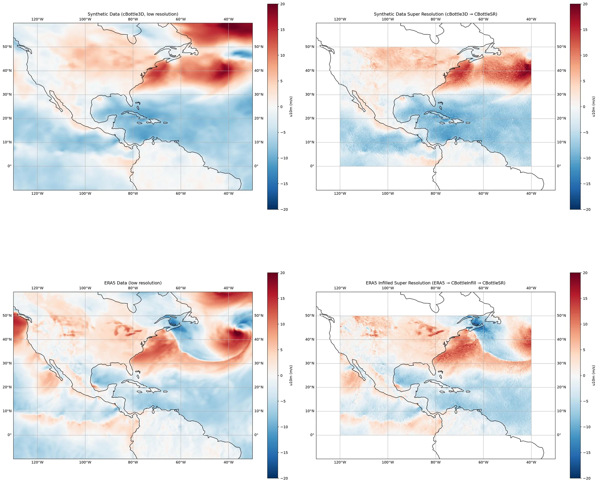

CBottle Super Resolution¶
Climate in a Bottle (cBottle) super resolution workflows for global weather.
This example will demonstrate the cBottle diffusion model for super resolution of global weather data. The CBottleSR model takes low-resolution climate data and generates high-resolution outputs using a diffusion-based approach.
For more information on cBottle see:
In this example you will learn:
- Performing super resolution on synthetic data from the cBottle data source
- Performing super resolution on ERA5 data after infilling with cBottle
- Post-processing and visualizing super-resolution results
Set Up¶
For this example we will use the cBottle data source, infill diagnostic, and the CBottleSR super resolution model. The workflow demonstrates two approaches:
- Super resolution on synthetic data generated by cBottle3D
- Super resolution on real ERA5 data after variable infilling
We need the following components:
- Datasource: Generate data from the CBottle3D data api
earth2studio.data.CBottle3D. - Datasource: Pull data from the WeatherBench2 data api
earth2studio.data.WB2ERA5. - Diagnostic Model: Use the built in CBottle Infill Model
earth2studio.models.dx.CBottleInfill. - Super Resolution Model: Use the CBottleSR super resolution model
earth2studio.models.dx.CBottleSR.
import os
os.makedirs("outputs", exist_ok=True)
from dotenv import load_dotenv
load_dotenv() # TODO: make common example prep function
import torch
from earth2studio.data import WB2ERA5, CBottle3D, fetch_data
from earth2studio.grids import Region
from earth2studio.models.dx import CBottleInfill, CBottleSR
# Get the device
device = torch.device("cuda" if torch.cuda.is_available() else "cpu")
# Load the cBottle data source
package = CBottle3D.load_default_package()
cbottle_ds = CBottle3D.load_model(package)
# Load the super resolution model, restricted to a region since global super
# resolution is expensive
region = Region.box(west=-120, south=0, east=-40, north=50)
package = CBottleSR.load_default_package()
cbottle_sr = CBottleSR.load_model(
package,
output_resolution=(1024, 1024),
region=region,
distilled_model=True,
)
# Load the infill model
input_variables = ["u10m", "v10m"]
package = CBottleInfill.load_default_package()
cbottle_infill = CBottleInfill.load_model(
package, input_variables=input_variables, sampler_steps=18
)
# Load the ERA5 data source
era5_ds = WB2ERA5()
Console output484 lines
Downloading training-state-000512000.checkpoint: 0%| | 0.00/568M [00:00<?, ?B/s]
Downloading training-state-000512000.checkpoint: 2%|▏ | 10.0M/568M [00:00<00:22, 26.0MB/s]
Downloading training-state-000512000.checkpoint: 4%|▎ | 20.0M/568M [00:00<00:12, 45.3MB/s]
Downloading training-state-000512000.checkpoint: 7%|▋ | 40.0M/568M [00:00<00:07, 76.6MB/s]
Downloading training-state-000512000.checkpoint: 11%|█ | 60.0M/568M [00:00<00:05, 96.7MB/s]
Downloading training-state-000512000.checkpoint: 14%|█▍ | 80.0M/568M [00:00<00:04, 109MB/s]
Downloading training-state-000512000.checkpoint: 18%|█▊ | 100M/568M [00:01<00:03, 124MB/s]
Downloading training-state-000512000.checkpoint: 21%|██ | 120M/568M [00:01<00:03, 125MB/s]
Downloading training-state-000512000.checkpoint: 25%|██▍ | 140M/568M [00:01<00:04, 106MB/s]
Downloading training-state-000512000.checkpoint: 28%|██▊ | 160M/568M [00:01<00:03, 110MB/s]
Downloading training-state-000512000.checkpoint: 32%|███▏ | 180M/568M [00:01<00:03, 114MB/s]
Downloading training-state-000512000.checkpoint: 35%|███▌ | 200M/568M [00:02<00:03, 112MB/s]
Downloading training-state-000512000.checkpoint: 39%|███▊ | 220M/568M [00:02<00:03, 120MB/s]
Downloading training-state-000512000.checkpoint: 42%|████▏ | 240M/568M [00:02<00:02, 126MB/s]
Downloading training-state-000512000.checkpoint: 46%|████▌ | 260M/568M [00:02<00:02, 132MB/s]
Downloading training-state-000512000.checkpoint: 49%|████▉ | 280M/568M [00:02<00:02, 124MB/s]
Downloading training-state-000512000.checkpoint: 53%|█████▎ | 300M/568M [00:02<00:02, 122MB/s]
Downloading training-state-000512000.checkpoint: 56%|█████▋ | 320M/568M [00:03<00:02, 120MB/s]
Downloading training-state-000512000.checkpoint: 60%|█████▉ | 340M/568M [00:03<00:01, 126MB/s]
Downloading training-state-000512000.checkpoint: 63%|██████▎ | 360M/568M [00:03<00:01, 129MB/s]
Downloading training-state-000512000.checkpoint: 67%|██████▋ | 380M/568M [00:03<00:01, 126MB/s]
Downloading training-state-000512000.checkpoint: 70%|███████ | 400M/568M [00:03<00:01, 119MB/s]
Downloading training-state-000512000.checkpoint: 74%|███████▍ | 420M/568M [00:03<00:01, 121MB/s]
Downloading training-state-000512000.checkpoint: 77%|███████▋ | 440M/568M [00:04<00:01, 122MB/s]
Downloading training-state-000512000.checkpoint: 81%|████████ | 460M/568M [00:04<00:00, 124MB/s]
Downloading training-state-000512000.checkpoint: 85%|████████▍ | 480M/568M [00:04<00:00, 127MB/s]
Downloading training-state-000512000.checkpoint: 88%|████████▊ | 500M/568M [00:04<00:00, 133MB/s]
Downloading training-state-000512000.checkpoint: 92%|█████████▏| 520M/568M [00:04<00:00, 135MB/s]
Downloading training-state-000512000.checkpoint: 95%|█████████▌| 540M/568M [00:04<00:00, 138MB/s]
Downloading training-state-000512000.checkpoint: 99%|█████████▊| 560M/568M [00:04<00:00, 137MB/s]
Downloading training-state-000512000.checkpoint: 100%|██████████| 568M/568M [00:05<00:00, 118MB/s]
Downloading training-state-002048000.checkpoint: 0%| | 0.00/568M [00:00<?, ?B/s]
Downloading training-state-002048000.checkpoint: 2%|▏ | 10.0M/568M [00:00<00:15, 36.9MB/s]
Downloading training-state-002048000.checkpoint: 4%|▎ | 20.0M/568M [00:00<00:10, 52.9MB/s]
Downloading training-state-002048000.checkpoint: 7%|▋ | 40.0M/568M [00:00<00:06, 86.3MB/s]
Downloading training-state-002048000.checkpoint: 9%|▉ | 50.0M/568M [00:00<00:06, 89.9MB/s]
Downloading training-state-002048000.checkpoint: 12%|█▏ | 70.0M/568M [00:00<00:04, 110MB/s]
Downloading training-state-002048000.checkpoint: 16%|█▌ | 90.0M/568M [00:00<00:04, 118MB/s]
Downloading training-state-002048000.checkpoint: 19%|█▉ | 110M/568M [00:01<00:03, 127MB/s]
Downloading training-state-002048000.checkpoint: 23%|██▎ | 130M/568M [00:01<00:03, 134MB/s]
Downloading training-state-002048000.checkpoint: 26%|██▋ | 150M/568M [00:01<00:03, 138MB/s]
Downloading training-state-002048000.checkpoint: 30%|██▉ | 170M/568M [00:01<00:02, 142MB/s]
Downloading training-state-002048000.checkpoint: 33%|███▎ | 190M/568M [00:01<00:03, 130MB/s]
Downloading training-state-002048000.checkpoint: 37%|███▋ | 210M/568M [00:01<00:02, 130MB/s]
Downloading training-state-002048000.checkpoint: 41%|████ | 230M/568M [00:02<00:03, 117MB/s]
Downloading training-state-002048000.checkpoint: 44%|████▍ | 250M/568M [00:02<00:02, 121MB/s]
Downloading training-state-002048000.checkpoint: 48%|████▊ | 270M/568M [00:02<00:02, 129MB/s]
Downloading training-state-002048000.checkpoint: 51%|█████ | 290M/568M [00:02<00:02, 134MB/s]
Downloading training-state-002048000.checkpoint: 55%|█████▍ | 310M/568M [00:02<00:01, 137MB/s]
Downloading training-state-002048000.checkpoint: 58%|█████▊ | 330M/568M [00:02<00:01, 140MB/s]
Downloading training-state-002048000.checkpoint: 62%|██████▏ | 350M/568M [00:03<00:01, 137MB/s]
Downloading training-state-002048000.checkpoint: 65%|██████▌ | 370M/568M [00:03<00:01, 135MB/s]
Downloading training-state-002048000.checkpoint: 69%|██████▊ | 390M/568M [00:03<00:01, 138MB/s]
Downloading training-state-002048000.checkpoint: 72%|███████▏ | 410M/568M [00:03<00:01, 142MB/s]
Downloading training-state-002048000.checkpoint: 76%|███████▌ | 430M/568M [00:03<00:01, 144MB/s]
Downloading training-state-002048000.checkpoint: 79%|███████▉ | 450M/568M [00:03<00:00, 146MB/s]
Downloading training-state-002048000.checkpoint: 83%|████████▎ | 470M/568M [00:03<00:00, 134MB/s]
Downloading training-state-002048000.checkpoint: 86%|████████▋ | 490M/568M [00:04<00:00, 136MB/s]
Downloading training-state-002048000.checkpoint: 90%|████████▉ | 510M/568M [00:04<00:00, 141MB/s]
Downloading training-state-002048000.checkpoint: 93%|█████████▎| 530M/568M [00:04<00:00, 142MB/s]
Downloading training-state-002048000.checkpoint: 97%|█████████▋| 550M/568M [00:04<00:00, 144MB/s]
Downloading training-state-002048000.checkpoint: 100%|██████████| 568M/568M [00:04<00:00, 140MB/s]
Downloading training-state-002048000.checkpoint: 100%|██████████| 568M/568M [00:04<00:00, 128MB/s]
Downloading training-state-009856000.checkpoint: 0%| | 0.00/1.66G [00:00<?, ?B/s]
Downloading training-state-009856000.checkpoint: 1%| | 10.0M/1.66G [00:00<00:29, 60.7MB/s]
Downloading training-state-009856000.checkpoint: 2%|▏ | 30.0M/1.66G [00:00<00:16, 108MB/s]
Downloading training-state-009856000.checkpoint: 3%|▎ | 50.0M/1.66G [00:00<00:13, 124MB/s]
Downloading training-state-009856000.checkpoint: 4%|▍ | 70.0M/1.66G [00:00<00:13, 131MB/s]
Downloading training-state-009856000.checkpoint: 5%|▌ | 90.0M/1.66G [00:00<00:13, 129MB/s]
Downloading training-state-009856000.checkpoint: 6%|▋ | 110M/1.66G [00:00<00:12, 133MB/s]
Downloading training-state-009856000.checkpoint: 8%|▊ | 130M/1.66G [00:01<00:12, 134MB/s]
Downloading training-state-009856000.checkpoint: 9%|▉ | 150M/1.66G [00:01<00:11, 136MB/s]
Downloading training-state-009856000.checkpoint: 10%|▉ | 170M/1.66G [00:01<00:11, 138MB/s]
Downloading training-state-009856000.checkpoint: 11%|█ | 190M/1.66G [00:01<00:11, 134MB/s]
Downloading training-state-009856000.checkpoint: 12%|█▏ | 210M/1.66G [00:01<00:11, 135MB/s]
Downloading training-state-009856000.checkpoint: 13%|█▎ | 230M/1.66G [00:01<00:11, 134MB/s]
Downloading training-state-009856000.checkpoint: 15%|█▍ | 250M/1.66G [00:02<00:11, 130MB/s]
Downloading training-state-009856000.checkpoint: 16%|█▌ | 270M/1.66G [00:02<00:11, 133MB/s]
Downloading training-state-009856000.checkpoint: 17%|█▋ | 290M/1.66G [00:02<00:16, 92.4MB/s]
Downloading training-state-009856000.checkpoint: 18%|█▊ | 310M/1.66G [00:02<00:14, 101MB/s]
Downloading training-state-009856000.checkpoint: 19%|█▉ | 330M/1.66G [00:02<00:13, 106MB/s]
Downloading training-state-009856000.checkpoint: 21%|██ | 350M/1.66G [00:03<00:12, 112MB/s]
Downloading training-state-009856000.checkpoint: 22%|██▏ | 370M/1.66G [00:03<00:12, 114MB/s]
Downloading training-state-009856000.checkpoint: 23%|██▎ | 390M/1.66G [00:03<00:12, 113MB/s]
Downloading training-state-009856000.checkpoint: 24%|██▍ | 410M/1.66G [00:03<00:11, 117MB/s]
Downloading training-state-009856000.checkpoint: 25%|██▌ | 430M/1.66G [00:03<00:11, 121MB/s]
Downloading training-state-009856000.checkpoint: 26%|██▋ | 450M/1.66G [00:03<00:10, 124MB/s]
Downloading training-state-009856000.checkpoint: 28%|██▊ | 470M/1.66G [00:04<00:10, 127MB/s]
Downloading training-state-009856000.checkpoint: 29%|██▉ | 490M/1.66G [00:04<00:09, 129MB/s]
Downloading training-state-009856000.checkpoint: 30%|██▉ | 510M/1.66G [00:04<00:09, 134MB/s]
Downloading training-state-009856000.checkpoint: 31%|███ | 530M/1.66G [00:04<00:09, 128MB/s]
Downloading training-state-009856000.checkpoint: 32%|███▏ | 550M/1.66G [00:04<00:09, 125MB/s]
Downloading training-state-009856000.checkpoint: 33%|███▎ | 570M/1.66G [00:04<00:09, 127MB/s]
Downloading training-state-009856000.checkpoint: 35%|███▍ | 590M/1.66G [00:05<00:09, 128MB/s]
Downloading training-state-009856000.checkpoint: 36%|███▌ | 610M/1.66G [00:05<00:08, 130MB/s]
Downloading training-state-009856000.checkpoint: 37%|███▋ | 630M/1.66G [00:05<00:09, 124MB/s]
Downloading training-state-009856000.checkpoint: 38%|███▊ | 650M/1.66G [00:05<00:08, 124MB/s]
Downloading training-state-009856000.checkpoint: 39%|███▉ | 670M/1.66G [00:05<00:09, 119MB/s]
Downloading training-state-009856000.checkpoint: 40%|████ | 690M/1.66G [00:05<00:09, 108MB/s]
Downloading training-state-009856000.checkpoint: 42%|████▏ | 710M/1.66G [00:06<00:09, 109MB/s]
Downloading training-state-009856000.checkpoint: 43%|████▎ | 730M/1.66G [00:06<00:08, 115MB/s]
Downloading training-state-009856000.checkpoint: 44%|████▍ | 750M/1.66G [00:06<00:08, 114MB/s]
Downloading training-state-009856000.checkpoint: 45%|████▌ | 770M/1.66G [00:06<00:08, 116MB/s]
Downloading training-state-009856000.checkpoint: 46%|████▋ | 790M/1.66G [00:06<00:07, 120MB/s]
Downloading training-state-009856000.checkpoint: 48%|████▊ | 810M/1.66G [00:07<00:07, 125MB/s]
Downloading training-state-009856000.checkpoint: 49%|████▊ | 830M/1.66G [00:07<00:07, 127MB/s]
Downloading training-state-009856000.checkpoint: 50%|████▉ | 850M/1.66G [00:07<00:07, 125MB/s]
Downloading training-state-009856000.checkpoint: 51%|█████ | 870M/1.66G [00:07<00:06, 127MB/s]
Downloading training-state-009856000.checkpoint: 52%|█████▏ | 890M/1.66G [00:07<00:06, 123MB/s]
Downloading training-state-009856000.checkpoint: 53%|█████▎ | 910M/1.66G [00:07<00:06, 123MB/s]
Downloading training-state-009856000.checkpoint: 55%|█████▍ | 930M/1.66G [00:08<00:06, 126MB/s]
Downloading training-state-009856000.checkpoint: 56%|█████▌ | 950M/1.66G [00:08<00:06, 125MB/s]
Downloading training-state-009856000.checkpoint: 57%|█████▋ | 970M/1.66G [00:08<00:05, 129MB/s]
Downloading training-state-009856000.checkpoint: 58%|█████▊ | 990M/1.66G [00:08<00:05, 129MB/s]
Downloading training-state-009856000.checkpoint: 59%|█████▉ | 0.99G/1.66G [00:08<00:05, 130MB/s]
Downloading training-state-009856000.checkpoint: 60%|██████ | 1.01G/1.66G [00:08<00:05, 127MB/s]
Downloading training-state-009856000.checkpoint: 62%|██████▏ | 1.03G/1.66G [00:08<00:05, 126MB/s]
Downloading training-state-009856000.checkpoint: 63%|██████▎ | 1.04G/1.66G [00:09<00:05, 129MB/s]
Downloading training-state-009856000.checkpoint: 64%|██████▍ | 1.06G/1.66G [00:09<00:04, 131MB/s]
Downloading training-state-009856000.checkpoint: 65%|██████▌ | 1.08G/1.66G [00:09<00:04, 125MB/s]
Downloading training-state-009856000.checkpoint: 66%|██████▋ | 1.10G/1.66G [00:09<00:04, 126MB/s]
Downloading training-state-009856000.checkpoint: 67%|██████▋ | 1.12G/1.66G [00:09<00:04, 125MB/s]
Downloading training-state-009856000.checkpoint: 69%|██████▊ | 1.14G/1.66G [00:10<00:04, 122MB/s]
Downloading training-state-009856000.checkpoint: 70%|██████▉ | 1.16G/1.66G [00:10<00:04, 118MB/s]
Downloading training-state-009856000.checkpoint: 71%|███████ | 1.18G/1.66G [00:10<00:05, 97.5MB/s]
Downloading training-state-009856000.checkpoint: 72%|███████▏ | 1.19G/1.66G [00:10<00:05, 96.0MB/s]
Downloading training-state-009856000.checkpoint: 72%|███████▏ | 1.20G/1.66G [00:10<00:05, 93.1MB/s]
Downloading training-state-009856000.checkpoint: 73%|███████▎ | 1.22G/1.66G [00:10<00:04, 101MB/s]
Downloading training-state-009856000.checkpoint: 75%|███████▍ | 1.24G/1.66G [00:11<00:04, 104MB/s]
Downloading training-state-009856000.checkpoint: 76%|███████▌ | 1.26G/1.66G [00:11<00:04, 107MB/s]
Downloading training-state-009856000.checkpoint: 77%|███████▋ | 1.28G/1.66G [00:11<00:03, 106MB/s]
Downloading training-state-009856000.checkpoint: 78%|███████▊ | 1.30G/1.66G [00:11<00:03, 107MB/s]
Downloading training-state-009856000.checkpoint: 79%|███████▉ | 1.32G/1.66G [00:11<00:03, 108MB/s]
Downloading training-state-009856000.checkpoint: 80%|████████ | 1.34G/1.66G [00:12<00:03, 103MB/s]
Downloading training-state-009856000.checkpoint: 81%|████████ | 1.35G/1.66G [00:12<00:03, 97.4MB/s]
Downloading training-state-009856000.checkpoint: 82%|████████▏ | 1.37G/1.66G [00:12<00:03, 99.6MB/s]
Downloading training-state-009856000.checkpoint: 83%|████████▎ | 1.39G/1.66G [00:12<00:02, 99.5MB/s]
Downloading training-state-009856000.checkpoint: 85%|████████▍ | 1.41G/1.66G [00:12<00:02, 102MB/s]
Downloading training-state-009856000.checkpoint: 86%|████████▌ | 1.43G/1.66G [00:13<00:02, 104MB/s]
Downloading training-state-009856000.checkpoint: 86%|████████▋ | 1.44G/1.66G [00:13<00:02, 100MB/s]
Downloading training-state-009856000.checkpoint: 87%|████████▋ | 1.45G/1.66G [00:13<00:02, 101MB/s]
Downloading training-state-009856000.checkpoint: 87%|████████▋ | 1.46G/1.66G [00:13<00:03, 66.0MB/s]
Downloading training-state-009856000.checkpoint: 88%|████████▊ | 1.46G/1.66G [00:13<00:03, 70.6MB/s]
Downloading training-state-009856000.checkpoint: 89%|████████▉ | 1.48G/1.66G [00:13<00:02, 83.7MB/s]
Downloading training-state-009856000.checkpoint: 90%|█████████ | 1.50G/1.66G [00:14<00:01, 94.3MB/s]
Downloading training-state-009856000.checkpoint: 92%|█████████▏| 1.52G/1.66G [00:14<00:01, 96.4MB/s]
Downloading training-state-009856000.checkpoint: 92%|█████████▏| 1.53G/1.66G [00:14<00:01, 94.2MB/s]
Downloading training-state-009856000.checkpoint: 93%|█████████▎| 1.54G/1.66G [00:14<00:01, 93.6MB/s]
Downloading training-state-009856000.checkpoint: 94%|█████████▍| 1.56G/1.66G [00:14<00:01, 104MB/s]
Downloading training-state-009856000.checkpoint: 95%|█████████▌| 1.58G/1.66G [00:14<00:00, 107MB/s]
Downloading training-state-009856000.checkpoint: 96%|█████████▋| 1.60G/1.66G [00:15<00:00, 112MB/s]
Downloading training-state-009856000.checkpoint: 97%|█████████▋| 1.62G/1.66G [00:15<00:00, 120MB/s]
Downloading training-state-009856000.checkpoint: 99%|█████████▊| 1.64G/1.66G [00:15<00:00, 124MB/s]
Downloading training-state-009856000.checkpoint: 100%|█████████▉| 1.66G/1.66G [00:15<00:00, 127MB/s]
Downloading training-state-009856000.checkpoint: 100%|██████████| 1.66G/1.66G [00:15<00:00, 115MB/s]
Downloading config.json: 0%| | 0.00/25.0 [00:00<?, ?B/s]
Downloading config.json: 100%|██████████| 25.0/25.0 [00:00<00:00, 287B/s]
Downloading amip_midmonth_sst.nc: 0%| | 0.00/454M [00:00<?, ?B/s]
Downloading amip_midmonth_sst.nc: 2%|▏ | 10.0M/454M [00:00<00:23, 19.6MB/s]
Downloading amip_midmonth_sst.nc: 4%|▍ | 20.0M/454M [00:00<00:12, 35.3MB/s]
Downloading amip_midmonth_sst.nc: 9%|▉ | 40.0M/454M [00:00<00:07, 61.9MB/s]
Downloading amip_midmonth_sst.nc: 11%|█ | 50.0M/454M [00:00<00:06, 70.4MB/s]
Downloading amip_midmonth_sst.nc: 13%|█▎ | 60.0M/454M [00:01<00:05, 73.0MB/s]
Downloading amip_midmonth_sst.nc: 18%|█▊ | 80.0M/454M [00:01<00:04, 94.9MB/s]
Downloading amip_midmonth_sst.nc: 22%|██▏ | 100M/454M [00:01<00:03, 99.8MB/s]
Downloading amip_midmonth_sst.nc: 26%|██▋ | 120M/454M [00:01<00:03, 111MB/s]
Downloading amip_midmonth_sst.nc: 31%|███ | 140M/454M [00:01<00:02, 124MB/s]
Downloading amip_midmonth_sst.nc: 35%|███▌ | 160M/454M [00:01<00:02, 130MB/s]
Downloading amip_midmonth_sst.nc: 40%|███▉ | 180M/454M [00:02<00:02, 119MB/s]
Downloading amip_midmonth_sst.nc: 44%|████▍ | 200M/454M [00:02<00:02, 127MB/s]
Downloading amip_midmonth_sst.nc: 48%|████▊ | 220M/454M [00:02<00:01, 135MB/s]
Downloading amip_midmonth_sst.nc: 53%|█████▎ | 240M/454M [00:02<00:01, 143MB/s]
Downloading amip_midmonth_sst.nc: 57%|█████▋ | 260M/454M [00:02<00:01, 147MB/s]
Downloading amip_midmonth_sst.nc: 62%|██████▏ | 280M/454M [00:02<00:01, 143MB/s]
Downloading amip_midmonth_sst.nc: 66%|██████▌ | 300M/454M [00:02<00:01, 138MB/s]
Downloading amip_midmonth_sst.nc: 70%|███████ | 320M/454M [00:03<00:00, 142MB/s]
Downloading amip_midmonth_sst.nc: 75%|███████▍ | 340M/454M [00:03<00:00, 138MB/s]
Downloading amip_midmonth_sst.nc: 79%|███████▉ | 360M/454M [00:03<00:00, 139MB/s]
Downloading amip_midmonth_sst.nc: 84%|████████▎ | 380M/454M [00:03<00:00, 144MB/s]
Downloading amip_midmonth_sst.nc: 88%|████████▊ | 400M/454M [00:03<00:00, 148MB/s]
Downloading amip_midmonth_sst.nc: 92%|█████████▏| 420M/454M [00:03<00:00, 143MB/s]
Downloading amip_midmonth_sst.nc: 97%|█████████▋| 440M/454M [00:03<00:00, 140MB/s]
Downloading amip_midmonth_sst.nc: 100%|██████████| 454M/454M [00:04<00:00, 138MB/s]
Downloading amip_midmonth_sst.nc: 100%|██████████| 454M/454M [00:04<00:00, 117MB/s]
Downloading cBottle-SR-Distill.zip: 0%| | 0.00/1.23G [00:00<?, ?B/s]
Downloading cBottle-SR-Distill.zip: 1%| | 10.0M/1.23G [00:01<02:34, 8.51MB/s]
Downloading cBottle-SR-Distill.zip: 2%|▏ | 20.0M/1.23G [00:01<01:12, 17.9MB/s]
Downloading cBottle-SR-Distill.zip: 2%|▏ | 30.0M/1.23G [00:01<00:46, 27.7MB/s]
Downloading cBottle-SR-Distill.zip: 3%|▎ | 40.0M/1.23G [00:01<00:37, 34.4MB/s]
Downloading cBottle-SR-Distill.zip: 4%|▍ | 50.0M/1.23G [00:01<00:30, 41.9MB/s]
Downloading cBottle-SR-Distill.zip: 5%|▍ | 60.0M/1.23G [00:01<00:25, 49.2MB/s]
Downloading cBottle-SR-Distill.zip: 6%|▌ | 70.0M/1.23G [00:02<00:31, 39.7MB/s]
Downloading cBottle-SR-Distill.zip: 6%|▋ | 80.0M/1.23G [00:02<00:27, 45.6MB/s]
Downloading cBottle-SR-Distill.zip: 7%|▋ | 90.0M/1.23G [00:03<00:37, 32.8MB/s]
Downloading cBottle-SR-Distill.zip: 8%|▊ | 100M/1.23G [00:03<00:36, 33.7MB/s]
Downloading cBottle-SR-Distill.zip: 9%|▊ | 110M/1.23G [00:03<00:29, 40.3MB/s]
Downloading cBottle-SR-Distill.zip: 10%|▉ | 120M/1.23G [00:03<00:24, 48.2MB/s]
Downloading cBottle-SR-Distill.zip: 11%|█ | 140M/1.23G [00:03<00:16, 69.5MB/s]
Downloading cBottle-SR-Distill.zip: 13%|█▎ | 160M/1.23G [00:03<00:13, 87.6MB/s]
Downloading cBottle-SR-Distill.zip: 14%|█▍ | 180M/1.23G [00:04<00:11, 99.3MB/s]
Downloading cBottle-SR-Distill.zip: 16%|█▌ | 200M/1.23G [00:05<00:36, 30.4MB/s]
Downloading cBottle-SR-Distill.zip: 17%|█▋ | 210M/1.23G [00:07<00:57, 19.2MB/s]
Downloading cBottle-SR-Distill.zip: 17%|█▋ | 220M/1.23G [00:08<01:07, 16.1MB/s]
Downloading cBottle-SR-Distill.zip: 18%|█▊ | 230M/1.23G [00:08<01:09, 15.5MB/s]
Downloading cBottle-SR-Distill.zip: 19%|█▉ | 240M/1.23G [00:09<01:07, 15.8MB/s]
Downloading cBottle-SR-Distill.zip: 20%|█▉ | 250M/1.23G [00:10<01:04, 16.3MB/s]
Downloading cBottle-SR-Distill.zip: 21%|██ | 260M/1.23G [00:10<00:56, 18.7MB/s]
Downloading cBottle-SR-Distill.zip: 21%|██▏ | 270M/1.23G [00:10<00:43, 23.8MB/s]
Downloading cBottle-SR-Distill.zip: 22%|██▏ | 280M/1.23G [00:10<00:34, 30.2MB/s]
Downloading cBottle-SR-Distill.zip: 24%|██▍ | 300M/1.23G [00:10<00:21, 46.1MB/s]
Downloading cBottle-SR-Distill.zip: 25%|██▌ | 320M/1.23G [00:10<00:15, 64.6MB/s]
Downloading cBottle-SR-Distill.zip: 27%|██▋ | 340M/1.23G [00:11<00:11, 83.2MB/s]
Downloading cBottle-SR-Distill.zip: 29%|██▊ | 360M/1.23G [00:11<00:11, 79.1MB/s]
Downloading cBottle-SR-Distill.zip: 30%|███ | 380M/1.23G [00:11<00:12, 71.3MB/s]
Downloading cBottle-SR-Distill.zip: 31%|███ | 390M/1.23G [00:11<00:12, 74.6MB/s]
Downloading cBottle-SR-Distill.zip: 32%|███▏ | 400M/1.23G [00:11<00:11, 78.2MB/s]
Downloading cBottle-SR-Distill.zip: 33%|███▎ | 420M/1.23G [00:12<00:09, 91.2MB/s]
Downloading cBottle-SR-Distill.zip: 35%|███▍ | 440M/1.23G [00:12<00:07, 109MB/s]
Downloading cBottle-SR-Distill.zip: 36%|███▋ | 460M/1.23G [00:12<00:06, 120MB/s]
Downloading cBottle-SR-Distill.zip: 38%|███▊ | 480M/1.23G [00:12<00:08, 94.1MB/s]
Downloading cBottle-SR-Distill.zip: 40%|███▉ | 500M/1.23G [00:12<00:08, 89.0MB/s]
Downloading cBottle-SR-Distill.zip: 40%|████ | 510M/1.23G [00:13<00:09, 82.0MB/s]
Downloading cBottle-SR-Distill.zip: 42%|████▏ | 530M/1.23G [00:13<00:08, 95.1MB/s]
Downloading cBottle-SR-Distill.zip: 44%|████▎ | 550M/1.23G [00:13<00:06, 111MB/s]
Downloading cBottle-SR-Distill.zip: 45%|████▌ | 570M/1.23G [00:13<00:05, 125MB/s]
Downloading cBottle-SR-Distill.zip: 47%|████▋ | 590M/1.23G [00:13<00:06, 113MB/s]
Downloading cBottle-SR-Distill.zip: 48%|████▊ | 610M/1.23G [00:14<00:08, 84.1MB/s]
Downloading cBottle-SR-Distill.zip: 49%|████▉ | 620M/1.23G [00:14<00:10, 65.9MB/s]
Downloading cBottle-SR-Distill.zip: 51%|█████ | 640M/1.23G [00:14<00:08, 80.6MB/s]
Downloading cBottle-SR-Distill.zip: 52%|█████▏ | 660M/1.23G [00:14<00:06, 97.7MB/s]
Downloading cBottle-SR-Distill.zip: 54%|█████▍ | 680M/1.23G [00:14<00:05, 113MB/s]
Downloading cBottle-SR-Distill.zip: 56%|█████▌ | 700M/1.23G [00:14<00:04, 125MB/s]
Downloading cBottle-SR-Distill.zip: 57%|█████▋ | 720M/1.23G [00:15<00:04, 129MB/s]
Downloading cBottle-SR-Distill.zip: 59%|█████▊ | 740M/1.23G [00:15<00:03, 140MB/s]
Downloading cBottle-SR-Distill.zip: 60%|██████ | 760M/1.23G [00:15<00:03, 139MB/s]
Downloading cBottle-SR-Distill.zip: 62%|██████▏ | 780M/1.23G [00:15<00:04, 123MB/s]
Downloading cBottle-SR-Distill.zip: 63%|██████▎ | 800M/1.23G [00:15<00:04, 98.8MB/s]
Downloading cBottle-SR-Distill.zip: 65%|██████▌ | 820M/1.23G [00:16<00:05, 89.4MB/s]
Downloading cBottle-SR-Distill.zip: 66%|██████▌ | 830M/1.23G [00:16<00:04, 90.7MB/s]
Downloading cBottle-SR-Distill.zip: 67%|██████▋ | 840M/1.23G [00:16<00:04, 90.2MB/s]
Downloading cBottle-SR-Distill.zip: 67%|██████▋ | 850M/1.23G [00:16<00:04, 89.7MB/s]
Downloading cBottle-SR-Distill.zip: 68%|██████▊ | 860M/1.23G [00:16<00:04, 91.5MB/s]
Downloading cBottle-SR-Distill.zip: 70%|██████▉ | 880M/1.23G [00:16<00:04, 96.6MB/s]
Downloading cBottle-SR-Distill.zip: 71%|███████▏ | 900M/1.23G [00:16<00:03, 103MB/s]
Downloading cBottle-SR-Distill.zip: 73%|███████▎ | 920M/1.23G [00:17<00:03, 113MB/s]
Downloading cBottle-SR-Distill.zip: 75%|███████▍ | 940M/1.23G [00:17<00:03, 96.4MB/s]
Downloading cBottle-SR-Distill.zip: 75%|███████▌ | 950M/1.23G [00:17<00:04, 67.1MB/s]
Downloading cBottle-SR-Distill.zip: 76%|███████▌ | 960M/1.23G [00:18<00:07, 43.5MB/s]
Downloading cBottle-SR-Distill.zip: 77%|███████▋ | 970M/1.23G [00:18<00:06, 45.8MB/s]
Downloading cBottle-SR-Distill.zip: 78%|███████▊ | 980M/1.23G [00:18<00:06, 46.5MB/s]
Downloading cBottle-SR-Distill.zip: 79%|███████▊ | 990M/1.23G [00:18<00:06, 47.2MB/s]
Downloading cBottle-SR-Distill.zip: 79%|███████▉ | 0.98G/1.23G [00:19<00:05, 50.1MB/s]
Downloading cBottle-SR-Distill.zip: 80%|████████ | 0.99G/1.23G [00:19<00:05, 49.9MB/s]
Downloading cBottle-SR-Distill.zip: 81%|████████ | 1.00G/1.23G [00:19<00:05, 45.9MB/s]
Downloading cBottle-SR-Distill.zip: 82%|████████▏ | 1.01G/1.23G [00:19<00:04, 49.1MB/s]
Downloading cBottle-SR-Distill.zip: 83%|████████▎ | 1.02G/1.23G [00:19<00:04, 56.1MB/s]
Downloading cBottle-SR-Distill.zip: 83%|████████▎ | 1.03G/1.23G [00:20<00:03, 63.9MB/s]
Downloading cBottle-SR-Distill.zip: 85%|████████▍ | 1.04G/1.23G [00:20<00:02, 84.5MB/s]
Downloading cBottle-SR-Distill.zip: 86%|████████▋ | 1.06G/1.23G [00:20<00:01, 100MB/s]
Downloading cBottle-SR-Distill.zip: 88%|████████▊ | 1.08G/1.23G [00:20<00:01, 112MB/s]
Downloading cBottle-SR-Distill.zip: 90%|████████▉ | 1.10G/1.23G [00:20<00:01, 75.3MB/s]
Downloading cBottle-SR-Distill.zip: 90%|█████████ | 1.11G/1.23G [00:21<00:01, 71.5MB/s]
Downloading cBottle-SR-Distill.zip: 91%|█████████ | 1.12G/1.23G [00:21<00:01, 62.9MB/s]
Downloading cBottle-SR-Distill.zip: 93%|█████████▎| 1.14G/1.23G [00:21<00:01, 81.9MB/s]
Downloading cBottle-SR-Distill.zip: 94%|█████████▍| 1.16G/1.23G [00:21<00:00, 95.8MB/s]
Downloading cBottle-SR-Distill.zip: 96%|█████████▌| 1.18G/1.23G [00:21<00:00, 99.4MB/s]
Downloading cBottle-SR-Distill.zip: 98%|█████████▊| 1.20G/1.23G [00:22<00:00, 72.1MB/s]
Downloading cBottle-SR-Distill.zip: 98%|█████████▊| 1.21G/1.23G [00:22<00:00, 70.8MB/s]
Downloading cBottle-SR-Distill.zip: 99%|█████████▉| 1.22G/1.23G [00:22<00:00, 69.6MB/s]
Downloading cBottle-SR-Distill.zip: 100%|█████████▉| 1.23G/1.23G [00:22<00:00, 66.8MB/s]
Downloading cBottle-SR-Distill.zip: 100%|██████████| 1.23G/1.23G [00:22<00:00, 58.0MB/s]
Downloading ema-checkpoint-000512000.checkpoint: 0%| | 0.00/568M [00:00<?, ?B/s]
Downloading ema-checkpoint-000512000.checkpoint: 2%|▏ | 10.0M/568M [00:01<01:07, 8.67MB/s]
Downloading ema-checkpoint-000512000.checkpoint: 4%|▎ | 20.0M/568M [00:01<00:33, 17.1MB/s]
Downloading ema-checkpoint-000512000.checkpoint: 5%|▌ | 30.0M/568M [00:01<00:21, 26.0MB/s]
Downloading ema-checkpoint-000512000.checkpoint: 7%|▋ | 40.0M/568M [00:01<00:16, 34.4MB/s]
Downloading ema-checkpoint-000512000.checkpoint: 9%|▉ | 50.0M/568M [00:01<00:12, 44.6MB/s]
Downloading ema-checkpoint-000512000.checkpoint: 11%|█ | 60.0M/568M [00:02<00:10, 48.5MB/s]
Downloading ema-checkpoint-000512000.checkpoint: 12%|█▏ | 70.0M/568M [00:02<00:14, 36.5MB/s]
Downloading ema-checkpoint-000512000.checkpoint: 14%|█▍ | 80.0M/568M [00:02<00:11, 42.8MB/s]
Downloading ema-checkpoint-000512000.checkpoint: 16%|█▌ | 90.0M/568M [00:02<00:10, 46.0MB/s]
Downloading ema-checkpoint-000512000.checkpoint: 18%|█▊ | 100M/568M [00:02<00:09, 50.4MB/s]
Downloading ema-checkpoint-000512000.checkpoint: 19%|█▉ | 110M/568M [00:03<00:09, 51.7MB/s]
Downloading ema-checkpoint-000512000.checkpoint: 21%|██ | 120M/568M [00:03<00:08, 54.3MB/s]
Downloading ema-checkpoint-000512000.checkpoint: 23%|██▎ | 130M/568M [00:03<00:12, 36.3MB/s]
Downloading ema-checkpoint-000512000.checkpoint: 25%|██▍ | 140M/568M [00:04<00:11, 37.6MB/s]
Downloading ema-checkpoint-000512000.checkpoint: 26%|██▋ | 150M/568M [00:04<00:10, 40.3MB/s]
Downloading ema-checkpoint-000512000.checkpoint: 28%|██▊ | 160M/568M [00:04<00:10, 40.7MB/s]
Downloading ema-checkpoint-000512000.checkpoint: 30%|██▉ | 170M/568M [00:04<00:09, 42.7MB/s]
Downloading ema-checkpoint-000512000.checkpoint: 32%|███▏ | 180M/568M [00:05<00:09, 42.2MB/s]
Downloading ema-checkpoint-000512000.checkpoint: 33%|███▎ | 190M/568M [00:05<00:09, 44.0MB/s]
Downloading ema-checkpoint-000512000.checkpoint: 35%|███▌ | 200M/568M [00:05<00:11, 33.0MB/s]
Downloading ema-checkpoint-000512000.checkpoint: 37%|███▋ | 210M/568M [00:05<00:09, 37.6MB/s]
Downloading ema-checkpoint-000512000.checkpoint: 39%|███▊ | 220M/568M [00:06<00:08, 43.0MB/s]
Downloading ema-checkpoint-000512000.checkpoint: 40%|████ | 230M/568M [00:06<00:07, 45.6MB/s]
Downloading ema-checkpoint-000512000.checkpoint: 42%|████▏ | 240M/568M [00:06<00:06, 49.7MB/s]
Downloading ema-checkpoint-000512000.checkpoint: 44%|████▍ | 250M/568M [00:06<00:06, 51.7MB/s]
Downloading ema-checkpoint-000512000.checkpoint: 46%|████▌ | 260M/568M [00:06<00:05, 55.0MB/s]
Downloading ema-checkpoint-000512000.checkpoint: 48%|████▊ | 270M/568M [00:06<00:05, 62.5MB/s]
Downloading ema-checkpoint-000512000.checkpoint: 49%|████▉ | 280M/568M [00:07<00:04, 69.6MB/s]
Downloading ema-checkpoint-000512000.checkpoint: 51%|█████ | 290M/568M [00:07<00:04, 68.9MB/s]
Downloading ema-checkpoint-000512000.checkpoint: 53%|█████▎ | 300M/568M [00:07<00:03, 71.8MB/s]
Downloading ema-checkpoint-000512000.checkpoint: 55%|█████▍ | 310M/568M [00:07<00:04, 64.9MB/s]
Downloading ema-checkpoint-000512000.checkpoint: 56%|█████▋ | 320M/568M [00:07<00:03, 72.4MB/s]
Downloading ema-checkpoint-000512000.checkpoint: 58%|█████▊ | 330M/568M [00:07<00:03, 74.4MB/s]
Downloading ema-checkpoint-000512000.checkpoint: 60%|█████▉ | 340M/568M [00:07<00:03, 76.8MB/s]
Downloading ema-checkpoint-000512000.checkpoint: 62%|██████▏ | 350M/568M [00:07<00:02, 77.6MB/s]
Downloading ema-checkpoint-000512000.checkpoint: 63%|██████▎ | 360M/568M [00:08<00:02, 77.4MB/s]
Downloading ema-checkpoint-000512000.checkpoint: 65%|██████▌ | 370M/568M [00:08<00:02, 79.8MB/s]
Downloading ema-checkpoint-000512000.checkpoint: 67%|██████▋ | 380M/568M [00:08<00:02, 73.4MB/s]
Downloading ema-checkpoint-000512000.checkpoint: 69%|██████▊ | 390M/568M [00:08<00:02, 72.4MB/s]
Downloading ema-checkpoint-000512000.checkpoint: 70%|███████ | 400M/568M [00:08<00:02, 78.4MB/s]
Downloading ema-checkpoint-000512000.checkpoint: 72%|███████▏ | 410M/568M [00:08<00:02, 83.0MB/s]
Downloading ema-checkpoint-000512000.checkpoint: 74%|███████▍ | 420M/568M [00:08<00:01, 86.8MB/s]
Downloading ema-checkpoint-000512000.checkpoint: 76%|███████▌ | 430M/568M [00:09<00:01, 89.5MB/s]
Downloading ema-checkpoint-000512000.checkpoint: 77%|███████▋ | 440M/568M [00:09<00:01, 91.4MB/s]
Downloading ema-checkpoint-000512000.checkpoint: 79%|███████▉ | 450M/568M [00:09<00:01, 93.2MB/s]
Downloading ema-checkpoint-000512000.checkpoint: 81%|████████ | 460M/568M [00:09<00:01, 82.9MB/s]
Downloading ema-checkpoint-000512000.checkpoint: 83%|████████▎ | 470M/568M [00:09<00:01, 72.4MB/s]
Downloading ema-checkpoint-000512000.checkpoint: 84%|████████▍ | 480M/568M [00:09<00:01, 66.1MB/s]
Downloading ema-checkpoint-000512000.checkpoint: 86%|████████▌ | 490M/568M [00:09<00:01, 62.6MB/s]
Downloading ema-checkpoint-000512000.checkpoint: 88%|████████▊ | 500M/568M [00:10<00:01, 60.4MB/s]
Downloading ema-checkpoint-000512000.checkpoint: 90%|████████▉ | 510M/568M [00:10<00:01, 56.9MB/s]
Downloading ema-checkpoint-000512000.checkpoint: 91%|█████████▏| 520M/568M [00:10<00:00, 64.2MB/s]
Downloading ema-checkpoint-000512000.checkpoint: 93%|█████████▎| 530M/568M [00:10<00:00, 71.4MB/s]
Downloading ema-checkpoint-000512000.checkpoint: 95%|█████████▌| 540M/568M [00:10<00:00, 77.6MB/s]
Downloading ema-checkpoint-000512000.checkpoint: 97%|█████████▋| 550M/568M [00:10<00:00, 82.6MB/s]
Downloading ema-checkpoint-000512000.checkpoint: 99%|█████████▊| 560M/568M [00:10<00:00, 86.3MB/s]
Downloading ema-checkpoint-000512000.checkpoint: 100%|██████████| 568M/568M [00:11<00:00, 54.2MB/s]
Downloading ema-checkpoint-002048000.checkpoint: 0%| | 0.00/568M [00:00<?, ?B/s]
Downloading ema-checkpoint-002048000.checkpoint: 2%|▏ | 10.0M/568M [00:01<00:59, 9.79MB/s]
Downloading ema-checkpoint-002048000.checkpoint: 4%|▎ | 20.0M/568M [00:01<00:30, 18.8MB/s]
Downloading ema-checkpoint-002048000.checkpoint: 5%|▌ | 30.0M/568M [00:01<00:21, 26.2MB/s]
Downloading ema-checkpoint-002048000.checkpoint: 7%|▋ | 40.0M/568M [00:01<00:17, 32.5MB/s]
Downloading ema-checkpoint-002048000.checkpoint: 9%|▉ | 50.0M/568M [00:01<00:14, 37.9MB/s]
Downloading ema-checkpoint-002048000.checkpoint: 11%|█ | 60.0M/568M [00:02<00:12, 41.5MB/s]
Downloading ema-checkpoint-002048000.checkpoint: 12%|█▏ | 70.0M/568M [00:02<00:15, 32.9MB/s]
Downloading ema-checkpoint-002048000.checkpoint: 14%|█▍ | 80.0M/568M [00:02<00:13, 39.3MB/s]
Downloading ema-checkpoint-002048000.checkpoint: 16%|█▌ | 90.0M/568M [00:02<00:10, 45.8MB/s]
Downloading ema-checkpoint-002048000.checkpoint: 18%|█▊ | 100M/568M [00:03<00:10, 47.7MB/s]
Downloading ema-checkpoint-002048000.checkpoint: 19%|█▉ | 110M/568M [00:03<00:09, 52.4MB/s]
Downloading ema-checkpoint-002048000.checkpoint: 21%|██ | 120M/568M [00:03<00:07, 59.3MB/s]
Downloading ema-checkpoint-002048000.checkpoint: 23%|██▎ | 130M/568M [00:03<00:07, 63.3MB/s]
Downloading ema-checkpoint-002048000.checkpoint: 25%|██▍ | 140M/568M [00:03<00:06, 70.6MB/s]
Downloading ema-checkpoint-002048000.checkpoint: 26%|██▋ | 150M/568M [00:03<00:05, 76.6MB/s]
Downloading ema-checkpoint-002048000.checkpoint: 28%|██▊ | 160M/568M [00:03<00:05, 81.5MB/s]
Downloading ema-checkpoint-002048000.checkpoint: 30%|██▉ | 170M/568M [00:03<00:04, 85.4MB/s]
Downloading ema-checkpoint-002048000.checkpoint: 32%|███▏ | 180M/568M [00:04<00:04, 88.2MB/s]
Downloading ema-checkpoint-002048000.checkpoint: 33%|███▎ | 190M/568M [00:04<00:04, 90.4MB/s]
Downloading ema-checkpoint-002048000.checkpoint: 35%|███▌ | 200M/568M [00:04<00:04, 91.6MB/s]
Downloading ema-checkpoint-002048000.checkpoint: 37%|███▋ | 210M/568M [00:04<00:04, 81.0MB/s]
Downloading ema-checkpoint-002048000.checkpoint: 39%|███▊ | 220M/568M [00:04<00:04, 78.4MB/s]
Downloading ema-checkpoint-002048000.checkpoint: 40%|████ | 230M/568M [00:04<00:04, 82.5MB/s]
Downloading ema-checkpoint-002048000.checkpoint: 42%|████▏ | 240M/568M [00:04<00:03, 86.2MB/s]
Downloading ema-checkpoint-002048000.checkpoint: 44%|████▍ | 250M/568M [00:04<00:03, 89.2MB/s]
Downloading ema-checkpoint-002048000.checkpoint: 46%|████▌ | 260M/568M [00:04<00:03, 91.3MB/s]
Downloading ema-checkpoint-002048000.checkpoint: 48%|████▊ | 270M/568M [00:05<00:03, 92.7MB/s]
Downloading ema-checkpoint-002048000.checkpoint: 49%|████▉ | 280M/568M [00:05<00:03, 94.2MB/s]
Downloading ema-checkpoint-002048000.checkpoint: 51%|█████ | 290M/568M [00:05<00:03, 82.3MB/s]
Downloading ema-checkpoint-002048000.checkpoint: 53%|█████▎ | 300M/568M [00:05<00:03, 78.7MB/s]
Downloading ema-checkpoint-002048000.checkpoint: 55%|█████▍ | 310M/568M [00:05<00:03, 73.7MB/s]
Downloading ema-checkpoint-002048000.checkpoint: 56%|█████▋ | 320M/568M [00:05<00:03, 73.1MB/s]
Downloading ema-checkpoint-002048000.checkpoint: 58%|█████▊ | 330M/568M [00:05<00:03, 74.5MB/s]
Downloading ema-checkpoint-002048000.checkpoint: 60%|█████▉ | 340M/568M [00:06<00:03, 73.5MB/s]
Downloading ema-checkpoint-002048000.checkpoint: 62%|██████▏ | 350M/568M [00:06<00:02, 79.2MB/s]
Downloading ema-checkpoint-002048000.checkpoint: 63%|██████▎ | 360M/568M [00:06<00:02, 78.3MB/s]
Downloading ema-checkpoint-002048000.checkpoint: 65%|██████▌ | 370M/568M [00:06<00:02, 74.7MB/s]
Downloading ema-checkpoint-002048000.checkpoint: 67%|██████▋ | 380M/568M [00:06<00:02, 79.4MB/s]
Downloading ema-checkpoint-002048000.checkpoint: 69%|██████▊ | 390M/568M [00:07<00:04, 40.8MB/s]
Downloading ema-checkpoint-002048000.checkpoint: 70%|███████ | 400M/568M [00:07<00:03, 45.3MB/s]
Downloading ema-checkpoint-002048000.checkpoint: 72%|███████▏ | 410M/568M [00:07<00:03, 50.8MB/s]
Downloading ema-checkpoint-002048000.checkpoint: 74%|███████▍ | 420M/568M [00:07<00:02, 53.8MB/s]
Downloading ema-checkpoint-002048000.checkpoint: 76%|███████▌ | 430M/568M [00:07<00:02, 56.3MB/s]
Downloading ema-checkpoint-002048000.checkpoint: 77%|███████▋ | 440M/568M [00:07<00:02, 59.6MB/s]
Downloading ema-checkpoint-002048000.checkpoint: 79%|███████▉ | 450M/568M [00:08<00:01, 63.0MB/s]
Downloading ema-checkpoint-002048000.checkpoint: 81%|████████ | 460M/568M [00:08<00:01, 70.5MB/s]
Downloading ema-checkpoint-002048000.checkpoint: 83%|████████▎ | 470M/568M [00:08<00:01, 69.8MB/s]
Downloading ema-checkpoint-002048000.checkpoint: 84%|████████▍ | 480M/568M [00:08<00:01, 76.2MB/s]
Downloading ema-checkpoint-002048000.checkpoint: 86%|████████▌ | 490M/568M [00:08<00:01, 73.9MB/s]
Downloading ema-checkpoint-002048000.checkpoint: 88%|████████▊ | 500M/568M [00:08<00:00, 79.6MB/s]
Downloading ema-checkpoint-002048000.checkpoint: 90%|████████▉ | 510M/568M [00:08<00:00, 84.2MB/s]
Downloading ema-checkpoint-002048000.checkpoint: 91%|█████████▏| 520M/568M [00:08<00:00, 81.3MB/s]
Downloading ema-checkpoint-002048000.checkpoint: 93%|█████████▎| 530M/568M [00:09<00:00, 69.9MB/s]
Downloading ema-checkpoint-002048000.checkpoint: 95%|█████████▌| 540M/568M [00:09<00:00, 65.1MB/s]
Downloading ema-checkpoint-002048000.checkpoint: 97%|█████████▋| 550M/568M [00:09<00:00, 60.9MB/s]
Downloading ema-checkpoint-002048000.checkpoint: 99%|█████████▊| 560M/568M [00:09<00:00, 58.2MB/s]
Downloading ema-checkpoint-002048000.checkpoint: 100%|██████████| 568M/568M [00:09<00:00, 58.3MB/s]
Downloading ema-checkpoint-002048000.checkpoint: 100%|██████████| 568M/568M [00:09<00:00, 60.0MB/s]
Downloading ema-checkpoint-009856000.checkpoint: 0%| | 0.00/568M [00:00<?, ?B/s]
Downloading ema-checkpoint-009856000.checkpoint: 2%|▏ | 10.0M/568M [00:01<00:58, 9.97MB/s]
Downloading ema-checkpoint-009856000.checkpoint: 4%|▎ | 20.0M/568M [00:01<00:29, 19.2MB/s]
Downloading ema-checkpoint-009856000.checkpoint: 5%|▌ | 30.0M/568M [00:01<00:22, 25.0MB/s]
Downloading ema-checkpoint-009856000.checkpoint: 7%|▋ | 40.0M/568M [00:01<00:17, 32.6MB/s]
Downloading ema-checkpoint-009856000.checkpoint: 9%|▉ | 50.0M/568M [00:01<00:14, 37.1MB/s]
Downloading ema-checkpoint-009856000.checkpoint: 11%|█ | 60.0M/568M [00:02<00:12, 44.3MB/s]
Downloading ema-checkpoint-009856000.checkpoint: 12%|█▏ | 70.0M/568M [00:02<00:10, 51.2MB/s]
Downloading ema-checkpoint-009856000.checkpoint: 14%|█▍ | 80.0M/568M [00:02<00:08, 57.4MB/s]
Downloading ema-checkpoint-009856000.checkpoint: 16%|█▌ | 90.0M/568M [00:02<00:07, 64.2MB/s]
Downloading ema-checkpoint-009856000.checkpoint: 18%|█▊ | 100M/568M [00:02<00:07, 67.8MB/s]
Downloading ema-checkpoint-009856000.checkpoint: 19%|█▉ | 110M/568M [00:02<00:06, 70.2MB/s]
Downloading ema-checkpoint-009856000.checkpoint: 21%|██ | 120M/568M [00:02<00:06, 73.7MB/s]
Downloading ema-checkpoint-009856000.checkpoint: 23%|██▎ | 130M/568M [00:02<00:05, 79.1MB/s]
Downloading ema-checkpoint-009856000.checkpoint: 25%|██▍ | 140M/568M [00:03<00:05, 83.4MB/s]
Downloading ema-checkpoint-009856000.checkpoint: 26%|██▋ | 150M/568M [00:03<00:05, 86.7MB/s]
Downloading ema-checkpoint-009856000.checkpoint: 28%|██▊ | 160M/568M [00:03<00:04, 89.2MB/s]
Downloading ema-checkpoint-009856000.checkpoint: 30%|██▉ | 170M/568M [00:03<00:04, 91.3MB/s]
Downloading ema-checkpoint-009856000.checkpoint: 32%|███▏ | 180M/568M [00:03<00:04, 92.2MB/s]
Downloading ema-checkpoint-009856000.checkpoint: 33%|███▎ | 190M/568M [00:03<00:04, 92.7MB/s]
Downloading ema-checkpoint-009856000.checkpoint: 35%|███▌ | 200M/568M [00:03<00:04, 88.4MB/s]
Downloading ema-checkpoint-009856000.checkpoint: 37%|███▋ | 210M/568M [00:03<00:04, 78.4MB/s]
Downloading ema-checkpoint-009856000.checkpoint: 39%|███▊ | 220M/568M [00:04<00:05, 69.5MB/s]
Downloading ema-checkpoint-009856000.checkpoint: 40%|████ | 230M/568M [00:04<00:06, 57.4MB/s]
Downloading ema-checkpoint-009856000.checkpoint: 42%|████▏ | 240M/568M [00:04<00:06, 56.3MB/s]
Downloading ema-checkpoint-009856000.checkpoint: 44%|████▍ | 250M/568M [00:04<00:05, 58.6MB/s]
Downloading ema-checkpoint-009856000.checkpoint: 46%|████▌ | 260M/568M [00:04<00:05, 60.5MB/s]
Downloading ema-checkpoint-009856000.checkpoint: 48%|████▊ | 270M/568M [00:04<00:04, 68.2MB/s]
Downloading ema-checkpoint-009856000.checkpoint: 49%|████▉ | 280M/568M [00:05<00:04, 74.3MB/s]
Downloading ema-checkpoint-009856000.checkpoint: 51%|█████ | 290M/568M [00:05<00:03, 79.5MB/s]
Downloading ema-checkpoint-009856000.checkpoint: 53%|█████▎ | 300M/568M [00:05<00:03, 83.7MB/s]
Downloading ema-checkpoint-009856000.checkpoint: 55%|█████▍ | 310M/568M [00:05<00:03, 86.4MB/s]
Downloading ema-checkpoint-009856000.checkpoint: 56%|█████▋ | 320M/568M [00:05<00:03, 80.4MB/s]
Downloading ema-checkpoint-009856000.checkpoint: 58%|█████▊ | 330M/568M [00:05<00:03, 81.1MB/s]
Downloading ema-checkpoint-009856000.checkpoint: 60%|█████▉ | 340M/568M [00:05<00:03, 78.0MB/s]
Downloading ema-checkpoint-009856000.checkpoint: 62%|██████▏ | 350M/568M [00:06<00:03, 72.6MB/s]
Downloading ema-checkpoint-009856000.checkpoint: 63%|██████▎ | 360M/568M [00:06<00:03, 65.6MB/s]
Downloading ema-checkpoint-009856000.checkpoint: 65%|██████▌ | 370M/568M [00:06<00:03, 59.3MB/s]
Downloading ema-checkpoint-009856000.checkpoint: 67%|██████▋ | 380M/568M [00:06<00:03, 56.3MB/s]
Downloading ema-checkpoint-009856000.checkpoint: 69%|██████▊ | 390M/568M [00:06<00:03, 61.2MB/s]
Downloading ema-checkpoint-009856000.checkpoint: 70%|███████ | 400M/568M [00:06<00:02, 64.2MB/s]
Downloading ema-checkpoint-009856000.checkpoint: 72%|███████▏ | 410M/568M [00:07<00:02, 65.3MB/s]
Downloading ema-checkpoint-009856000.checkpoint: 74%|███████▍ | 420M/568M [00:07<00:02, 65.2MB/s]
Downloading ema-checkpoint-009856000.checkpoint: 76%|███████▌ | 430M/568M [00:07<00:02, 64.9MB/s]
Downloading ema-checkpoint-009856000.checkpoint: 77%|███████▋ | 440M/568M [00:07<00:02, 67.2MB/s]
Downloading ema-checkpoint-009856000.checkpoint: 79%|███████▉ | 450M/568M [00:07<00:01, 72.3MB/s]
Downloading ema-checkpoint-009856000.checkpoint: 81%|████████ | 460M/568M [00:07<00:01, 76.1MB/s]
Downloading ema-checkpoint-009856000.checkpoint: 83%|████████▎ | 470M/568M [00:07<00:01, 79.7MB/s]
Downloading ema-checkpoint-009856000.checkpoint: 84%|████████▍ | 480M/568M [00:08<00:01, 81.7MB/s]
Downloading ema-checkpoint-009856000.checkpoint: 86%|████████▌ | 490M/568M [00:08<00:00, 84.4MB/s]
Downloading ema-checkpoint-009856000.checkpoint: 88%|████████▊ | 500M/568M [00:08<00:00, 85.8MB/s]
Downloading ema-checkpoint-009856000.checkpoint: 90%|████████▉ | 510M/568M [00:08<00:00, 85.9MB/s]
Downloading ema-checkpoint-009856000.checkpoint: 91%|█████████▏| 520M/568M [00:08<00:00, 86.8MB/s]
Downloading ema-checkpoint-009856000.checkpoint: 93%|█████████▎| 530M/568M [00:08<00:00, 87.5MB/s]
Downloading ema-checkpoint-009856000.checkpoint: 95%|█████████▌| 540M/568M [00:08<00:00, 78.0MB/s]
Downloading ema-checkpoint-009856000.checkpoint: 97%|█████████▋| 550M/568M [00:08<00:00, 72.3MB/s]
Downloading ema-checkpoint-009856000.checkpoint: 99%|█████████▊| 560M/568M [00:09<00:00, 68.4MB/s]
Downloading ema-checkpoint-009856000.checkpoint: 100%|██████████| 568M/568M [00:09<00:00, 67.0MB/s]
Downloading ema-checkpoint-009856000.checkpoint: 100%|██████████| 568M/568M [00:09<00:00, 64.3MB/s]
Downloading config.json: 0%| | 0.00/25.0 [00:00<?, ?B/s]
Downloading config.json: 100%|██████████| 25.0/25.0 [00:00<00:00, 278B/s]
Downloading amip_midmonth_sst.nc: 0%| | 0.00/454M [00:00<?, ?B/s]
Downloading amip_midmonth_sst.nc: 2%|▏ | 10.0M/454M [00:00<00:16, 27.8MB/s]
Downloading amip_midmonth_sst.nc: 7%|▋ | 30.0M/454M [00:00<00:07, 63.3MB/s]
Downloading amip_midmonth_sst.nc: 11%|█ | 50.0M/454M [00:00<00:05, 82.8MB/s]
Downloading amip_midmonth_sst.nc: 15%|█▌ | 70.0M/454M [00:00<00:03, 105MB/s]
Downloading amip_midmonth_sst.nc: 20%|█▉ | 90.0M/454M [00:01<00:03, 111MB/s]
Downloading amip_midmonth_sst.nc: 24%|██▍ | 110M/454M [00:01<00:03, 108MB/s]
Downloading amip_midmonth_sst.nc: 29%|██▊ | 130M/454M [00:01<00:03, 104MB/s]
Downloading amip_midmonth_sst.nc: 33%|███▎ | 150M/454M [00:01<00:03, 105MB/s]
Downloading amip_midmonth_sst.nc: 37%|███▋ | 170M/454M [00:01<00:02, 104MB/s]
Downloading amip_midmonth_sst.nc: 42%|████▏ | 190M/454M [00:02<00:02, 113MB/s]
Downloading amip_midmonth_sst.nc: 46%|████▌ | 210M/454M [00:02<00:02, 120MB/s]
Downloading amip_midmonth_sst.nc: 51%|█████ | 230M/454M [00:02<00:02, 113MB/s]
Downloading amip_midmonth_sst.nc: 55%|█████▌ | 250M/454M [00:02<00:01, 117MB/s]
Downloading amip_midmonth_sst.nc: 59%|█████▉ | 270M/454M [00:02<00:01, 106MB/s]
Downloading amip_midmonth_sst.nc: 64%|██████▍ | 290M/454M [00:02<00:01, 114MB/s]
Downloading amip_midmonth_sst.nc: 68%|██████▊ | 310M/454M [00:03<00:01, 122MB/s]
Downloading amip_midmonth_sst.nc: 73%|███████▎ | 330M/454M [00:03<00:01, 126MB/s]
Downloading amip_midmonth_sst.nc: 77%|███████▋ | 350M/454M [00:03<00:00, 129MB/s]
Downloading amip_midmonth_sst.nc: 81%|████████▏ | 370M/454M [00:03<00:00, 112MB/s]
Downloading amip_midmonth_sst.nc: 86%|████████▌ | 390M/454M [00:03<00:00, 104MB/s]
Downloading amip_midmonth_sst.nc: 90%|█████████ | 410M/454M [00:04<00:00, 101MB/s]
Downloading amip_midmonth_sst.nc: 95%|█████████▍| 430M/454M [00:04<00:00, 102MB/s]
Downloading amip_midmonth_sst.nc: 99%|█████████▉| 450M/454M [00:04<00:00, 110MB/s]
Downloading amip_midmonth_sst.nc: 100%|██████████| 454M/454M [00:04<00:00, 102MB/s]Super Resolution on Synthetic Data¶
First, let's generate synthetic climate data using the cBottle3D data source and then perform super resolution on it. This demonstrates the full cBottle pipeline from data generation to super-resolution enhancement.
import datetime
import numpy as np
from earth2studio.run import map_field
times = np.array([datetime.datetime(2020, 1, 1)], dtype="datetime64[ns]")
# Generate some samples from cBottle
cbottle_ds = cbottle_ds.to(device)
synth_x = fetch_data(
cbottle_ds,
times,
cbottle_sr.input_coords().coords["variable"].values,
device=device,
)
del cbottle_ds # Clean up data source model to free GPU memory
# Perform super resolution on synthetic data
cbottle_sr = cbottle_sr.to(device)
synth_x = map_field(synth_x, cbottle_sr.input_coords())
sr_synth_x = cbottle_sr(synth_x)
Console output3 lines
Generating cBottle Data: 0%| | 0/1 [00:00<?, ?it/s]
Generating cBottle Data: 100%|██████████| 1/1 [00:06<00:00, 6.08s/it]
Generating cBottle Data: 100%|██████████| 1/1 [00:06<00:00, 6.08s/it]Super Resolution on ERA5 Data¶
Next, we'll demonstrate super resolution on real ERA5 data. Since ERA5 doesn't contain all the variables needed by CBottleSR, we first use the CBottleInfill model to predict the missing variables, then perform super resolution.
# Get the ERA5 data (only u10m and v10m available)
era5_x = fetch_data(
era5_ds,
times,
input_variables,
device=device,
)
# Perform infilling to get all required variables
cbottle_infill = cbottle_infill.to(device)
infill_x = cbottle_infill(map_field(era5_x, cbottle_infill.input_coords()))
del cbottle_infill # Clean up infill model to free GPU memory
# Select the required variables and reshape for super resolution
infill_x = map_field(infill_x, cbottle_sr.input_coords())
sr_infill_x = cbottle_sr(infill_x)
Console output6 lines
Fetching WB2 data: 0%| | 0/2 [00:00<?, ?it/s]
Fetching WB2 data: 50%|█████ | 1/2 [00:00<00:00, 3.35it/s]
Fetching WB2 data: 100%|██████████| 2/2 [00:00<00:00, 6.56it/s]
Fetching WB2 statistics: 0it [00:00, ?it/s]
Fetching WB2 statistics: 0it [00:00, ?it/s]Post Processing CBottle Super Resolution Data¶
Let's visualize the super resolution results to compare the synthetic data approach with the ERA5 infilling approach. We'll plot the total cloud liquid water (tclw) variable as an example.
import cartopy.crs as ccrs
import matplotlib.pyplot as plt
plt.close("all")
# Convert only the plotting products to host arrays.
synth_coords = synth_x.coords
sr_synth_coords = sr_synth_x.coords
era5_coords = era5_x.coords
sr_infill_coords = sr_infill_x.coords
synth_x = synth_x.e2s.as_numpy()
sr_synth_x = sr_synth_x.e2s.as_numpy()
era5_x = era5_x.e2s.as_numpy()
sr_infill_x = sr_infill_x.e2s.as_numpy()
# Create projection focused on the super-resolved region
projection = ccrs.PlateCarree()
fig = plt.figure(figsize=(24, 24))
# Plot synthetic data
ax0 = fig.add_subplot(2, 2, 1, projection=projection)
west, south, east, north = region.params
extent = [west - 10, east + 10, south - 10, north + 10]
ax0.set_extent(extent, crs=ccrs.PlateCarree())
c = ax0.pcolormesh(
synth_coords["lon"],
synth_coords["lat"],
synth_x.sel(variable="u10m").squeeze().values,
transform=ccrs.PlateCarree(),
cmap="RdBu_r",
vmin=-20,
vmax=20,
)
plt.colorbar(c, ax=ax0, shrink=0.6, label="u10m (m/s)")
ax0.coastlines()
ax0.gridlines(draw_labels=True)
ax0.set_title("Synthetic Data (cBottle3D, low resolution)")
# Plot the synthetic super resolution data
ax1 = fig.add_subplot(2, 2, 2, projection=projection)
ax1.set_extent(extent, crs=ccrs.PlateCarree())
c = ax1.pcolormesh(
sr_synth_coords["lon"],
sr_synth_coords["lat"],
sr_synth_x.sel(variable="u10m").squeeze().values,
transform=ccrs.PlateCarree(),
cmap="RdBu_r",
vmin=-20,
vmax=20,
)
plt.colorbar(c, ax=ax1, shrink=0.6, label="u10m (m/s)")
ax1.coastlines()
ax1.gridlines(draw_labels=True)
ax1.set_title("Synthetic Data Super Resolution (cBottle3D → CBottleSR)")
# Plot the ERA5 data
ax2 = fig.add_subplot(2, 2, 3, projection=projection)
ax2.set_extent(extent, crs=ccrs.PlateCarree())
c = ax2.pcolormesh(
era5_coords["lon"],
era5_coords["lat"],
era5_x.sel(variable="u10m").squeeze().values,
transform=ccrs.PlateCarree(),
cmap="RdBu_r",
vmin=-20,
vmax=20,
)
plt.colorbar(c, ax=ax2, shrink=0.6, label="u10m (m/s)")
ax2.coastlines()
ax2.gridlines(draw_labels=True)
ax2.set_title("ERA5 Data (low resolution)")
# Plot the ERA5 infilled super resolution data
ax3 = fig.add_subplot(2, 2, 4, projection=projection)
ax3.set_extent(extent, crs=ccrs.PlateCarree())
c = ax3.pcolormesh(
sr_infill_coords["lon"],
sr_infill_coords["lat"],
sr_infill_x.sel(variable="u10m").squeeze().values,
transform=ccrs.PlateCarree(),
cmap="RdBu_r",
vmin=-20,
vmax=20,
)
plt.colorbar(c, ax=ax3, shrink=0.6, label="u10m (m/s)")
ax3.coastlines()
ax3.gridlines(draw_labels=True)
ax3.set_title("ERA5 Infilled Super Resolution (ERA5 → CBottleInfill → CBottleSR)")
plt.tight_layout()
plt.savefig("outputs/16_cbottle_super_resolution.jpg", dpi=150, bbox_inches="tight")
